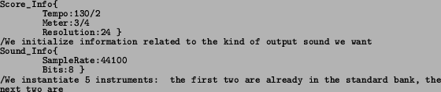
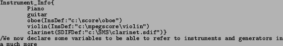
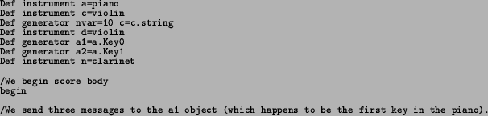
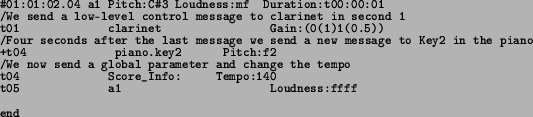

Next: MetriX in XML= MetriXML Up: MSDL: The MetriX Score Previous: The Score Body
This example shows the main possibilities of using the MSDL for controlling
a synthesis process. Note the different kind of Instruments used:
the first two have already been defined and included in the synthesizer
standard bank, the next two are loaded from an Instrument Definition
File during run-time, and the last one is a single SDIF File containing
any kind of information accepted by the SDIF File Format [Schwarz and Wright, 2000].
/parameters are just initial values as they can be later on changed from within the score body.

/loaded from their instrument definition file located elsewhere

/convenient way

/The message is sent in the second quarter-note bar one
